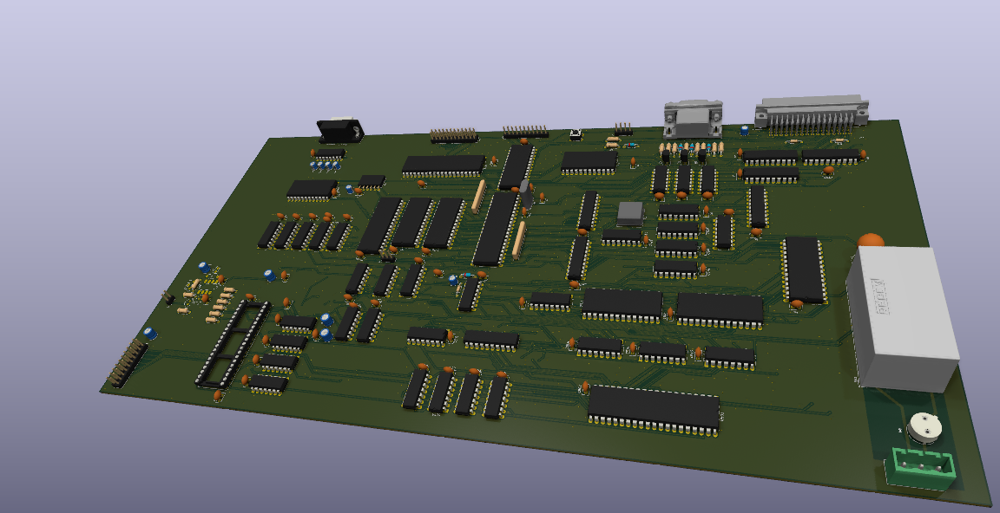
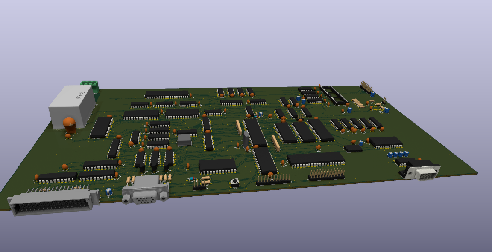

Processeur HD6309 · 128 Ko · 80 colonnes · carte SD · son AY-3-8910
Manuel de l'utilisateur
Ordinateur personnel OSM39 — matériel, système, applications et langages
Première édition, octobre 2026
CHAPITRE 1
Bienvenue dans le monde d'OSM39
OSM39 est un ordinateur personnel construit autour du processeur Hitachi HD6309, le plus puissant des descendants du célèbre 6809. Il réunit dans un seul boîtier tout ce qu'on attendait d'une machine des années 1980, avec un confort que celles-ci ne connaissaient pas : un bureau graphique, une carte SD, de la musique à trois voix et une voix de synthèse qui parle français.
Ce que contient votre OSM39
Élément
Caractéristiques
Processeur
Hitachi HD6309 en mode natif, horloge de 1,8432 MHz
Mémoire vive
128 Ko pour les programmes, en 4 pages de 32 Ko, plus 8 Ko réservés au système
Mémoire morte
8 Ko : le BIOS, qui démarre la machine et offre ses services aux programmes
Affichage
80 colonnes × 30 rangées, caractères de 8 × 16 points, 8 couleurs de premier plan atténuables et 8 couleurs de fond, sortie VGA 640 × 480
Caractères
Deux pages de 256 : l'alphabet, et une page de semi-graphismes (cadres, mosaïques du Minitel, icônes)
Son
Générateur AY-3-8910 : trois voix, bruit, enveloppes ; minuterie 6840 pour la parole
Stockage
Carte SD, avec son propre système de fichiers à dossiers (OSMFS)
Clavier
AZERTY français, pavé numérique, voyants pilotés par le système
Communication
Liaison série RS-232 à 115 200 bauds : modem Minitel, ordinateur hôte
Extension
Connecteur 48 broches à l'arrière (le bus du processeur) ; 16 lignes d'entrée-sortie sur l'AY, dont la Clouris, la souris tactile
Ce que vous pouvez faire
Dès la mise sous tension, OSM39 joue sa petite mélodie et ouvre OSM-VISION, son bureau. De là, tout se fait au clavier :
écrire et calculer avec EDIT, un traitement de texte, et CALC, un tableur ;
se connecter au Minitel : avec un modem, OSM39 appelle les services Vidéotex encore ouverts, comme MiniPavi ;
jouer à BRIQUES, ENVAHIS, GLOUTON ou DONJON39, un labyrinthe en trois dimensions ;
écouter de la musique et faire parler la machine en français avec PAROLE ;
programmer en BBC BASIC, en FORTH ou directement en assembleur, avec l'assembleur intégré.
Comment lire ce manuel
Les touches à frapper sont écrites ainsi : Entrée, Ctrl+C. Ce que vous tapez ou ce que la machine affiche est écrit COMME CECI. Les écrans reproduits dans ce manuel ont tous été pris sur le logiciel d'OSM39 lui-même.
CHAPITRE 2
Le matériel
Tout OSM39 tient sur une seule carte de 388 × 200 mm, logée sous le clavier. Ce chapitre vous en fait le tour : ses fonctions, ses connecteurs, ses deux mémoires mortes et les précautions à prendre.

La carte OSM39, vue de l'avant. À droite, le bloc d'alimentation secteur et son bornier ; au fond, les connecteurs du panneau arrière.
Les fonctions de la carte
Fonction
Composants
Processeur
Hitachi HD6309 (U107), horloge E de 1,8432 MHz
BIOS
EEPROM AT28C64 de 8 Ko (U104), en $E000-$FFFF
Mémoire des programmes
RAM de 128 Ko (U105), vue en 4 pages de 32 Ko à $0000-$7FFF
Mémoire du système
RAM de 8 Ko en $C000-$DFFF (U102)
Vidéo
Contrôleur 68B45, deux RAM d'écran (caractères et couleurs), EPROM des caractères (U515), quartz de 25,175 MHz pour le VGA
Minuteries
68B40 : la cadence de l'image (60 Hz) et l'horloge de la parole
Liaison série
68B50 et MAX232, prise DE9 à l'arrière
Clavier
second 68B50, en PS/2, dans les deux sens (voyants)
Carte SD
liaison SPI câblée, lente pour le démarrage puis rapide
Son
AY-3-8910 : trois voix, bruit et enveloppes, sortie ligne vers l'écran ou un amplificateur
Interface parallèle
6821 : deux ports de 8 bits sur une barrette, pour une imprimante par exemple
Alimentation
module secteur RECOM RAC20-05SK : 230 V vers 5 V, 20 W, fusible de 1 A
Attention : tension du secteur
Le bornier d'alimentation reçoit directement le secteur 230 V. Ne travaillez jamais sur la carte ni dans le boîtier la machine branchée, et ne remplacez le fusible que par un modèle identique.
Les connecteurs

Le panneau arrière. De gauche à droite sur cette vue : l'extension, la sortie VGA, et la prise série.
Repère
Emplacement
Rôle
J501
arrière
sortie vidéo VGA (DE15), pour tout écran VGA ou plat
J201
arrière
liaison série RS-232 (DE9 mâle, câblée comme un PC) : modem, ordinateur
J301
arrière
connecteur d'extension DIN 41612, 48 broches : le bus du processeur
J401
avant droit
entrée secteur (terre, neutre, phase), vers le module d'alimentation
J601
bord arrière
le clavier PS/2 (+5 V, données, horloge, masse)
J602
bord gauche
les deux ports de l'AY-3-8910 : 16 lignes d'entrée-sortie, dont la Clouris
J604
bord gauche
la sortie son, niveau ligne
J603
sur la carte
le module de carte SD
J102
bord arrière
l'interface parallèle (ports A et B du 6821)
J101
bord arrière
les sorties des minuteries 68B40
J103
sur la carte
cavalier d'écriture du BIOS (voir plus bas)
SW101
sur la carte
le bouton de réinitialisation
Brancher la Clouris
La Clouris, la souris tactile, se branche sur le port A de l'AY-3-8910, c'est-à-dire sur les broches impaires de J602 (sur la carte SD-KBD-SON, c'est J104, avec le même brochage). Son connecteur J7, huit broches, se relie ainsi :
J7 (Clouris)
Clou
J602
Ligne de l'AY
1
—
1 ou 2
+5 V
2
J1 : haut
17
IOA0
3
J2 : droite
15
IOA1
4
J3 : bas
13
IOA2
5
J4 : gauche
11
IOA3
6
J5 : centre
9
IOA4
7
J6 : clic, sous le pouce
7
IOA5
8
—
19 ou 20
masse
Les broches 3 et 5 (IOA7, IOA6) restent libres, comme tout le port B (broches paires de 4 à 18). La plaque de paume est à la masse sur la carte de la Clouris. Au repos, chaque ligne est à 1 ; un doigt posé sur un clou la fait passer à 0. La commande CLOUTEST affiche l'état des six clous à chaque changement : c'est le moyen de vérifier le câblage. Dans OSM-VISION, les quatre clous de direction déplacent la flèche, le pouce ouvre ce qu'elle désigne et le centre ouvre le menu.
Les deux mémoires mortes
OSM39 a deux mémoires mortes de 8 Ko, toutes deux au format 28C64 :
le BIOS (U104) démarre la machine, gère l'écran, le clavier, la carte SD, le son et la liaison série, et offre ses services aux programmes ;
la police (U515) contient les 512 caractères de 8 × 16 points : la page 0, l'alphabet complet, et la page 1, les cadres de fenêtres, les mosaïques du Minitel, les icônes et les dessins des jeux.
Pour les mettre à jour, on les programme avec un programmeur d'EPROM (par exemple un TL866) à partir des fichiers dist/EPROM/osm39.bin et dist/EPROM/font_osm39.bin, produits par deploy_sd.sh. Le cavalier J103 permet aussi d'écrire le BIOS sans le retirer de la carte ; laissez-le en position protégée en temps normal, pour qu'un programme égaré ne puisse pas l'effacer.
Le BIOS ne tient pas entier dans ses 8 Ko : sa seconde partie, le fichier BIN/BIOS2 de la carte SD, contient l'écriture des fichiers, la console du Terminal et le son. Le BIOS la charge en mémoire à chaque démarrage, et ne l'accepte que si elle a été construite avec lui. Après avoir reprogrammé le BIOS, mettez donc aussi la carte à jour avec egofs_deploy.py.
CHAPITRE 3
Mise en route
Brancher OSM39 prend deux minutes. Ce chapitre explique aussi comment préparer une carte SD sur un ordinateur, et ce que fait la machine entre la mise sous tension et l'apparition du bureau.
Brancher la machine
Reliez la sortie VGA à un écran. Un moniteur VGA de 14 pouces convient parfaitement ; un écran plat aussi, tant qu'il accepte le 640 × 480.
Reliez la sortie son à l'entrée audio de l'écran ou à un petit amplificateur.
Si vous le souhaitez, branchez un modem ou un ordinateur sur la prise série.
Glissez la carte SD dans son logement, puis branchez le cordon secteur.
Préparer une carte SD
OSM39 range ses fichiers selon son propre format, OSMFS. Une carte SD neuve se prépare sur un ordinateur sous Linux, avec les outils fournis dans le dossier tools/egofs :
./deploy_sd.sh # tout reconstruire et vérifier
python3 tools/egofs/egofs_deploy.py /dev/sdX # écrire la carte
Remplacez /dev/sdX par le nom de votre lecteur de cartes. L'outil formate une carte qui ne l'est pas encore, y installe le système, les programmes et les dossiers, puis relit la carte pour vérifier. Sur une carte déjà en service, il met à jour le système sans toucher à vos propres fichiers. Une carte de 32 Go convient très bien ; OSM39 n'en utilise qu'une petite partie.
L'interface graphique egofs_gui.py permet aussi de parcourir une carte, d'y ajouter ou d'en retirer des fichiers à la main.
Le démarrage
À la mise sous tension, OSM39 lit la carte SD, y charge la seconde partie de son BIOS, puis joue sa mélodie et affiche son nom. Pendant une seconde environ, il guette le clavier : si vous appuyez sur une touche, il ouvre le mode SECOURS (voir plus bas). Sinon, il charge OSM-VISION depuis la carte, et vous voilà devant le bureau.
Le BIOS recharge OSM-VISION chaque fois que celui-ci rend la main : la machine retombe toujours sur ses pieds.
Le mode SECOURS
SECOURS est le petit moniteur caché dans le BIOS. Il sert quand la carte SD manque ou qu'il faut charger un programme par la liaison série. Il comprend trois commandes :
Commande
Effet
LOAD
recevoir un programme au format Intel hex, collé dans un terminal sur la liaison série
RUN aaaa
lancer le programme à l'adresse hexadécimale aaaa
BOOT
relire la carte SD et lancer OSM-VISION
Depuis un ordinateur relié à la prise série, Ctrl+A ramène OSM39 en SECOURS à tout moment.
Si quelque chose ne va pas
Ce que vous voyez
Que faire
Carte SD absente ou muette
vérifiez la carte et son logement, puis tapez BOOT. Les cartes SD de première génération (SD v1, avant 2006) ne sont pas reconnues ; prenez une carte SDHC.
SECOURS s'ouvre tout seul
OSM-VISION n'a pas été trouvé à la racine de la carte : refaites la carte avec egofs_deploy.py.
TRAP 6309 PC=…
un programme a exécuté une instruction impossible. Appuyez sur une touche : la machine redémarre et garde un compte rendu, que la commande MONITEUR affiche avec R.
Pas de mélodie ni de son, le Terminal occupe tout l'écran, les sauvegardes échouent
la seconde partie du BIOS (BIN/BIOS2) manque ou ne va pas avec le BIOS : mettez la carte à jour avec egofs_deploy.py, à partir du même deploy_sd.sh que le BIOS programmé. Dans MONITEUR, M CC50 affiche 01 quand elle est chargée.
Écran noir
vérifiez le câble VGA ; l'écran doit accepter le 640 × 480 à 60 Hz.
CHAPITRE 4
OSM-VISION, le bureau
OSM-VISION est le premier programme que vous voyez. C'est à la fois le gestionnaire de fichiers de la carte SD et la porte d'entrée de tous les autres programmes : vous y rangez vos documents, vous les ouvrez, et vous y revenez à la fin de chaque application.
Le bureau. La fenêtre montre le contenu du dossier courant : les dossiers d'abord, puis les fichiers. En bas, le rang du fichier choisi, le nombre d'éléments, et l'état du son.
Se déplacer dans la liste
Le fichier choisi apparaît en surbrillance. Les flèches le déplacent :
Touche
Effet
↑↓
fichier précédent, suivant
←→, Pg précPg suiv
page précédente, suivante, quand la liste est plus longue que la fenêtre
DébutFin
premier et dernier élément
De petites flèches dans la marge de droite signalent qu'il reste des éléments au-dessus ou au-dessous. Un + après le nombre d'éléments indique un dossier si grand que la liste a été tronquée.
Les dossiers
Les dossiers portent une icône de classeur. Entrée sur un dossier y entre ; l'élément .., toujours en tête de liste hors de la racine, ramène au dossier parent. La carte livrée avec la machine est rangée ainsi :
Dossier
Contenu
BIN
les programmes du système et les commandes du Terminal, avec EDIT et CALC
APPS
les applications : MINITEL, PAROLE, la mire de réglage…
GAMES
les jeux
MUSIQUE
les morceaux pour le générateur de son
BASIC
des programmes d'exemple en BBC BASIC
DOC
des aide-mémoire à lire à l'écran
SRC, LIB, BIOS
les sources en assembleur, prêtes pour l'assembleur intégré
BUDGET
un dossier vide pour vos feuilles de calcul
Pour créer un dossier, frappez Ctrl+N et donnez-lui un nom. Un programme reste utilisable quel que soit le dossier courant : quand un nom de programme n'est pas trouvé dans le dossier courant, le système le cherche dans BIN, puis à la racine.
Ouvrir un fichier
Entrée ouvre l'élément choisi. Un programme est lancé ; un document est ouvert avec le programme qui lui correspond, d'après la fin de son nom :
Fin du nom
Ouvert avec
.TXT, .ASM, .INC
EDIT, le traitement de texte
.CAL
CALC, le tableur
.MUS
AYJOUE, le lecteur de musique
Les applications s'ouvrent par-dessus le bureau ; les commandes du système s'exécutent dans la fenêtre du Terminal. À leur fin, vous retrouvez OSM-VISION là où vous l'aviez laissé.
Le menu
La barre d'Espace ouvre, à côté du fichier choisi, le menu de tout ce qu'on peut en faire. Choisissez une ligne avec les flèches et Entrée, ou frappez directement la lettre indiquée à droite ; Échap referme le menu.
Le menu. Chaque action a sa lettre.
Lettre
Action
Entrée
Ouvrir, comme depuis la liste
E
Éditer le fichier avec EDIT, quelle que soit sa fin de nom
V
Voir son contenu sans risque de le modifier : Tab passe du texte à l'hexadécimal (32 Ko au plus)
R
Renommer
CUL
Copier, Couper, Coller (voir ci-dessous)
N
Nouveau dossier
X
Exécuter une commande, avec ses paramètres
P
Propriétés : taille, adresse de chargement, et les attributs à cocher
S
Supprimer, après confirmation
T
ouvrir le Terminal
Copier, couper, coller
Pour copier un fichier dans un autre dossier : choisissez-le, frappez Ctrl+C, entrez dans le dossier de destination, puis frappez Ctrl+V. Ctrl+X au lieu de Ctrl+Cdéplace le fichier au lieu de le copier. La copie garde tout du fichier : son contenu, son adresse de chargement et ses attributs. Un fichier peut atteindre 64 Ko. Un dossier se déplace, mais ne se copie pas.
OSM-VISION refuse de coller sur un nom qui existe déjà : rien n'est jamais écrasé sans que vous l'ayez demandé.
Le son
Le petit haut-parleur de la barre d'état montre si le son est en marche ou coupé. La touche M coupe et rétablit le son, pour OSM-VISION comme pour toutes les applications.
Si la carte d'horloge est branchée sur le connecteur du PIA, la date et l'heure s'affichent à droite du haut-parleur (14/11/2026 18:32), relues chaque seconde. Sans carte, cet endroit reste vide. L'horloge se règle avec la commande HORLOGE.
L'aide
Vous ne vous souvenez plus d'une touche ? Frappez ? : le panneau des raccourcis s'ouvre à droite du bureau. Il reste affiché pendant que vous travaillez, et revient même après une application ; frappez de nouveau ? pour le refermer.
Le panneau des raccourcis, ouvert par ?. Ici, le son est coupé : le haut-parleur de la barre d'état est barré.
Recharger le bureau
Échap rend la main au système, qui recharge aussitôt OSM-VISION depuis la carte. C'est utile si vous avez changé de carte SD sans éteindre la machine.
CHAPITRE 5
Le Terminal et les commandes
Le Terminal est la ligne de commande d'OSM39. Il s'ouvre dans une fenêtre du bureau, et vous y tapez des commandes, comme sur les ordinateurs d'avant les fenêtres.
Le Terminal. Les commandes cd /games, ls et pwd. Pour chaque fichier, ls donne sa taille en octets et ses attributs.
Ouvrir et fermer le Terminal
Dans OSM-VISION, la touche T (ou la ligne Terminal du menu) ouvre le Terminal. Le signe # vous invite à taper une commande, puis Entrée. La commande EXIT referme le Terminal et vous ramène au bureau, dans le dossier où vous avez terminé.
Les majuscules et les minuscules sont équivalentes dans les noms de commandes et de fichiers.
Les chemins
Un fichier se désigne par son nom dans le dossier courant (LETTRE.TXT), ou par un chemin : / est la racine, .. le dossier parent, et les dossiers se séparent par / (/GAMES/DONJON39.TXT, ../DOC/EDIT.TXT). Toutes les commandes acceptent les chemins.
Les commandes intégrées
Commande
Effet
HELP
la liste des commandes
CLS
effacer la fenêtre
DEL nom
supprimer un fichier
CHMOD nom mode
changer les attributs : +x, -w, =r… ou un chiffre de 0 à 7
DUMP adresse
afficher la mémoire en hexadécimal
VER
la version du Terminal
EXIT
retour à OSM-VISION
Les commandes du dossier BIN
Tout programme se lance en tapant son nom, suivi de ses paramètres. Les commandes du système vivent dans le dossier BIN, et se trouvent depuis n'importe quel dossier :
Commande
Effet
LS [dossier]
lister un dossier : noms, tailles, attributs
CD dossier
changer de dossier (CD .., CD /, CD /APPS)
PWD
afficher le dossier courant
MKDIR nom
créer un dossier
CP source dest
copier un fichier
MV source dest
déplacer ou renommer un fichier
RM nom
supprimer un fichier ou un dossier vide
TYPE nom
afficher un fichier texte, page par page
SIZE nom
la taille d'un fichier
CPU
reconnaître le processeur : 6809 ou HD6309
NEIGE
banc d'essai de l'affichage : où tombe la fenêtre de retour de trame, et quels accès du processeur perturbent l'image
HORLOGE [JJ/MM/AAAA HH:MM[:SS]]
afficher la date et l'heure de la carte d'horloge, ou les régler
MONITEUR
examiner et modifier la mémoire, lire le compte rendu du dernier incident
SDTEST
tester la carte SD en détail
AYTEST
tester le générateur de son, voix par voix
AYJOUE morceau
jouer un morceau de musique (chapitre 8)
TELE
se laisser piloter par un ordinateur sur la liaison série (chapitre 10)
ASM source sortie
l'assembleur intégré (chapitre 9)
EDIT, CALC
le traitement de texte et le tableur (chapitre 6)
BBCBASIC, BASIC, FORTH
les langages (chapitre 9)
Le MONITEUR
MONITEUR est l'outil des curieux et des programmeurs. Ses commandes tiennent en une lettre :
Commande
Effet
M [page:]aaaa
afficher la mémoire à partir de l'adresse aaaa, dans une page de RAM au choix
E [page:]aaaa
modifier la mémoire, octet par octet
G [page:]aaaa
appeler une routine
R
le compte rendu du dernier incident (TRAP) : registres, pile, état de la machine
Q
quitter
CHAPITRE 6
Les applications
OSM39 est livré avec un traitement de texte, un tableur, un Minitel et une machine qui parle. Ils se lancent tous depuis OSM-VISION, et rendent la main par Échap.
EDIT, le traitement de texte
EDIT ouvert sur son propre aide-mémoire, DOC/EDIT.TXT.
EDIT reprend les touches de WordStar, le traitement de texte des années 1980, mais les flèches et les touches de page fonctionnent aussi. Il s'ouvre par Entrée sur un fichier .TXT, .ASM ou .INC, ou par EDIT nom dans le Terminal. Il accepte des textes de près de 64 Ko.
Touches
Effet
Ctrl+K puis S
sauver et continuer
Ctrl+K puis X
sauver et sortir
Ctrl+K puis Q, ou Échap
sortir sans sauver (EDIT demande confirmation si le texte a changé)
Ctrl+K puis L
ouvrir un autre fichier
flèches, ou Ctrl+EXSD
se déplacer
Pg.précPg.suiv, ou Ctrl+RC
page par page
Ctrl+Début, Ctrl+Fin
début, fin du fichier
Suppr ou Ctrl+G
effacer le caractère sous le curseur
Ctrl+Y
effacer la ligne
Habitude de WordStar
Dans EDIT, Ctrl+C descend d'une page et Ctrl+X d'une ligne : ils ne copient pas et ne coupent pas. La mention *modifie* sur la ligne d'état rappelle que le texte n'est pas encore sauvé.
CALC, le tableur
CALC : un budget de trois lignes, dont le total est la formule @SUM(B2...B4).
CALC est un tableur dans l'esprit de VisiCalc : 26 colonnes (A à Z) sur 50 lignes. Il s'ouvre par Entrée sur un fichier .CAL, ou vide par CALC. Tapez directement dans une cellule pour la remplacer ; Entrée sur une cellule reprend son contenu pour le modifier.
Un libellé commence par une lettre. Pour un libellé en chiffres, commencez par " ("2026).
Une valeur est un nombre (deux décimales, virgule ou point) ou une formule : + - * / ( ), les références A1 à Z50, et les fonctions @SUM, @MIN, @MAX, @AVG sur une plage, comme @SUM(A1...A9).
Une formule qui commence par une référence doit commencer par + : +A1*2 est une formule, A1*2 un libellé.
Les commandes commencent par / : /S sauve la feuille, /L en lit une autre, /B vide la cellule, /E efface toute la feuille. Échap quitte, après confirmation si la feuille n'est pas sauvée. ERREUR signale une division par zéro ou une formule mal écrite, et >>>> un nombre trop large pour sa colonne.
MINITEL
MINITEL attend le numéro à appeler.La page d'accueil de MiniPavi, telle qu'OSM39 l'a reçue au téléphone.
Avec un modem V.23 branché sur la prise série, OSM39 devient un Minitel et appelle les serveurs d'aujourd'hui, comme MiniPavi. Tapez 3615 (ou 36xx) puis Entrée : OSM39 compose le numéro de MiniPavi, laisse passer son message vocal, et affiche la page d'accueil. La correction d'erreurs du Minitel 1B est prise en charge : une ligne téléphonique bruyante ne gâche pas l'écran.
Sans modem, le programme tools/minitel/modem.py joue ce rôle sur un ordinateur relié à la prise série, et passe par Internet.
Touche d'OSM39
Touche du Minitel
Entrée
ENVOI
Ret. arr.
CORRECTION
Suppr
ANNULATION
Pg.préc / Pg.suiv
RETOUR / SUITE
Début
SOMMAIRE
Fin
GUIDE
Inser
RÉPÉTITION
Ctrl+F
fenêtre ou plein écran
Échap
raccrocher
Brancher un modem
La prise série d'OSM39 est câblée comme celle d'un PC. Un modem s'y branche par un câble droit mâle-mâle (broche 1 vers 1, 2 vers 2…), jamais par un câble « null-modem ». Les broches 2, 3, 5, 7 et 8 suffisent.
PAROLE
PAROLE : tapez une phrase, OSM39 la prononce.
OSM39 n'a pas de puce vocale : PAROLE fabrique la voix par logiciel, à la manière du célèbre S.A.M. de 1982, et la fait sortir par le générateur de son. Tapez une phrase en français puis Entrée. Les nombres (jusqu'à 9999) sont lus en lettres, les sigles en majuscules sont épelés. Tab change de voix, Échap revient au bureau. Le résultat a tout le charme d'une voix de robot des années 1980.
Les outils
Programme
Rôle
MIRE
outil de diagnostic : le code de chaque touche, des écrans de test pour l'image et la touche V pour régler le contrôleur vidéo
SON
essai d'échantillons sonores par les minuteries
PONT
démonstration des appels entre pages de mémoire (chapitre 10)
MIRE, l'application modèle et l'outil de diagnostic.
CHAPITRE 7
Les jeux
Quatre jeux attendent dans le dossier GAMES. Tous se quittent par Échap, et ramènent le bureau tel que vous l'aviez laissé.
BRIQUES
BRIQUES.
Le grand classique des pièces qui tombent. ←→ déplacent la pièce, ↑ la tourne, ↓ accélère sa chute, et Espace la lâche d'un coup. Chaque ligne complète disparaît ; la partie se termine quand la pile atteint le haut du puits.
ENVAHIS
ENVAHIS.
Défendez la Terre contre les vagues d'envahisseurs. ←→ déplacent le canon (on peut les garder enfoncées), Espace tire. Le meilleur score est gardé sur la carte SD, dans ENVAHIS.HI.
GLOUTON
GLOUTON.
Mangez toutes les pastilles du labyrinthe sans vous faire attraper. Les quatre fantômes suivent chacun leur propre tactique, comme sur la borne d'arcade. Les flèches (ou le pavé numérique) dirigent GLOUTON, P met en pause, Espace relance une partie. Meilleur score dans GLOUTON.HI.
DONJON39
DONJON39.
Promenez-vous dans un labyrinthe en trois dimensions, dessiné en temps réel avec les mosaïques du Minitel. ↑↓ avancent et reculent, ←→ tournent, Espace ouvre la porte devant vous (elle se referme seule), Tab affiche la mini-carte.
Dessiner votre propre labyrinthe
La carte est lue dans le fichier DONJON39.TXT du dossier courant : modifiez-la avec EDIT. C'est une grille de 16 × 16 caractères : un caractère par case, les murs et les portes d'un côté, le vide de l'autre, et la position de départ du joueur. Les règles complètes sont rappelées en tête du fichier. Le bord est toujours un mur, même si vous l'oubliez ; sans fichier, DONJON39 prend sa carte intégrée.
CHAPITRE 8
La musique et la parole
Le générateur de son AY-3-8910 est celui de l'Amstrad CPC et du ZX Spectrum 128 : trois voix, un bruit, et des enveloppes. OSM39 s'en sert pour la musique, les bruitages, et même pour parler.
Écouter un morceau
AYJOUE joue Korobeiniki, l'air russe que BRIQUES a rendu célèbre.
Les morceaux sont des fichiers .MUS, rangés dans le dossier MUSIQUE. Entrée sur l'un d'eux dans OSM-VISION le joue ; dans le Terminal, tapez AYJOUE nom. Échap arrête la musique.
La touche M d'OSM-VISION coupe ou rétablit le son de toute la machine ; le haut-parleur de la barre d'état montre son état.
Écrire un morceau
Un morceau s'écrit comme un texte, sur un ordinateur ou dans EDIT, puis se compile avec tools/ay/ay.py. Le même outil le fait écouter sur l'ordinateur (--wav) avant de l'envoyer sur la carte. Voici un extrait :
titre Korobeiniki
tempo 8 # trames par unité (60 trames = 1 s)
instrument piano vol 15 13 12 10 9 8 7 6 5 4
instrument tambour bruit 6 son non vol 15 10 6 3 0
A: @piano E5*2 B4 C5 D5*2 C5 B4 | A4*2 - ~
C: [ @piano E2*4 @tambour C4 ]
Élément
Signification
A:B:C:
les trois voix ; une voix peut tenir sur plusieurs lignes
C4, D#4, Eb3
une note, en notation anglaise (C = do), octaves 1 à 8
*n
après une note : sa durée en unités (1 par défaut)
- et ~
un silence ; la note précédente continue
@nom
changer d'instrument
[ … ]
répéter sans fin (pour les musiques de fond)
|
barre de mesure, pour la lisibilité
instrument
vol : le volume trame par trame ; bruit P : ajouter le bruit ; son non : retirer le son ; env forme période : l'enveloppe de l'AY
La parole
PAROLE (chapitre 6) utilise l'AY d'une façon inattendue : ses volumes, changés 7200 fois par seconde, en font un convertisseur numérique-analogique. Pendant qu'OSM39 parle, toute la machine se consacre à la voix ; l'image reste figée.
Le son dans vos programmes
Le BIOS joue une partition simple en tâche de fond (c'est lui qui joue la mélodie du démarrage) : en BBC BASIC, c'est l'instruction SOUND. Les programmes en assembleur peuvent aussi inclure le lecteur de musique, lib/ay_joue.asm.
CHAPITRE 9
Les langages
Comme tout ordinateur familial digne de ce nom, OSM39 se programme dès qu'on l'allume. Il parle quatre langages : deux BASIC, le FORTH et l'assembleur.
BBC BASIC
Le BASIC de la BBC Micro d'Acorn, réputé le meilleur de son époque : procédures, fonctions, variables locales, et un assembleur intégré. OSM39 utilise le portage pour 6809 de Dominic Beesley. Il se lance par BBCBASIC (avec l'assembleur, 9 Ko pour les programmes) ou BBCPLUS (sans l'assembleur, 11 Ko).
10 FOR I%=1 TO 10
20 PRINT I%, I%*I%
30 NEXT
RUN
Commande
Effet
SAVE "NOM", LOAD "NOM"
sauver, charger un programme sur la carte SD
*CAT, *DIR dossier
lister, changer de dossier
*EXEC fichier
taper un programme écrit en texte, par exemple dans EDIT
*DELETE nom
supprimer un fichier
*LOAD, *SAVE
charger, sauver du code machine
*BYE
quitter
Le graphisme (PLOT, MOVE, DRAW, GCOL, CLG, POINT) dessine en 152 × 60 points dans la fenêtre, avec les mosaïques du Minitel. SOUND joue des notes ; OPENIN, OPENOUT, PRINT# et INPUT# lisent et écrivent des fichiers. Échap arrête un programme. Le dossier BASIC contient des exemples : MANDELBROT.BAS, GRAPHE.BAS, REBOND.BAS, MUSIQUE.BAS… à charger par *EXEC.
BASIC
BASIC est un BASIC classique à numéros de ligne, dans la tradition de Microsoft : PRINT, INPUT, GOTO, GOSUB, FOR…NEXT, DATA, PEEK et POKE, LIST, RENUM, EDIT, LOAD et SAVE. Il occupe peu de place et démarre instantanément.
FORTH
Le FORTH, langage à pile cher aux pionniers de la micro-informatique. On empile des nombres, puis on les traite par des mots :
2 3 + . 5
OK
: CARRE DUP * ;
OK
7 CARRE . 49
OK
QUIT rend la main.
ASM, l'assembleur
OSM39 assemble lui-même ses programmes, sans ordinateur hôte. ASM lit un source en assembleur 6309 sur la carte et écrit le programme :
CD /SRC
ASM HELLO.ASM HELLO
ASM GLOUTON.ASM /GAMES/GLOUTON
Il comprend tout le jeu d'instructions du HD6309, les directives usuelles (EQU, FCB, FDB, FCC, FCN, RMB, ORG), les assemblages conditionnels et les INCLUDE sur quatre niveaux. Son résultat est identique, octet pour octet, à celui de l'assembleur lwasm sur un PC. Les sources de GLOUTON et de MIRE sont dans le dossier SRC, avec les bibliothèques dans LIB et BIOS : de quoi apprendre, modifier et réassembler un vrai jeu. En cas d'erreur, ASM indique le fichier et la ligne.
CHAPITRE 10
Programmer OSM39
Ce chapitre s'adresse à ceux qui veulent écrire leurs propres programmes en assembleur, sur OSM39 ou sur un PC.
Le processeur
Le Hitachi HD6309 est un 6809 amélioré : deux accumulateurs de plus (E et F, réunis en W, puis Q = D:W pour 32 bits), des multiplications et divisions 16 bits, des copies de blocs (TFM) et des opérations sur les bits. OSM39 le fait fonctionner en mode natif, plus rapide : une interruption empile alors 14 octets, et l'adresse de retour se trouve à 12,S.
La mémoire
Un programme dispose de $0000-$7FFF, 32 Ko pris dans l'une des quatre pages de RAM. OSM-VISION occupe la page 0 et lance les programmes en page 1 ; les pages 2 et 3 servent de mémoire de travail (EDIT y range son texte, CALC ses cellules). L'écran est en $8000 (les caractères) et $9000 (les couleurs), le BIOS en $E000. Le détail est en annexe.
Pour appeler une routine d'une autre page, le BIOS offre FAR_CALL (A = page, X = adresse), qui revient avec la page de l'appelant ; c'est ce que montre l'application PONT.
Les services du BIOS
Les services du BIOS s'appellent par une table de pointeurs en $C000, dont les noms sont dans BIOS/SYSFUNC.INC :
INCLUDE "../BIOS/HARDWARE.INC"
INCLUDE "../BIOS/SYSFUNC.INC"
LDX #Message
JSR [table_function_ram+sys_PrintString]
Règle commune : la retenue signale l'erreur. Au retour, C = 1 si le service a échoué, C = 0 s'il a réussi. Les familles de services :
Famille
Exemples
console
écrire un caractère ou un texte, lire une ligne, lire une touche sans attendre (sys_kbd_poll)
fichiers
chercher, charger, sauver, renommer, supprimer, lister, lire un secteur
dossiers
changer de dossier, en créer, connaître le dossier courant
mémoire
copier entre pages, appeler dans une autre page
noms
sys_Format_Filename_83 met un nom ou un chemin au format des services de fichiers ; à appeler avant tout service FS_*
Le détail de chaque service (registres d'entrée et de sortie, registres qu'il ne rend pas) est dans docs/services.md. Ne comptez pas sur W après un service de fichiers.
Les adresses d'entrées-sorties et de la RAM du système viennent de HARDWARE.INC : n'écrivez jamais une adresse en dur, elle pourrait changer avec le BIOS.
Une application OSM-VISION
Le plus simple est de partir de SRC/MIRE.ASM, l'application modèle. Une application :
commence par son point d'entrée, à l'adresse 0 ;
inclut LIB/VISION.ASM, qui apporte les services de dessin (fenêtres, textes, saisie, son) décrits dans LIB/VIS.INC ;
dessine par ces services, et écrit dans l'écran seulement pendant le retour de trame ;
rend la main par RTS, sans effacer l'écran : OSM-VISION le restaure.
Sur la carte, une application porte l'attribut a et se charge en page 1 : CHMOD NOM +a. ASM le fait de lui-même pour un source qui inclut VISION.ASM.
Les outils sur PC
Outil
Rôle
make, deploy_sd.sh
construire tout le système avec lwtools, puis préparer la carte
tools/egofs
lire et écrire une carte au format OSMFS
tools/tele/tele.py
piloter OSM39 par la liaison série, une fois TELE lancé : lire et écrire la mémoire, appeler des routines
tools/ay/ay.py
compiler et écouter les morceaux de musique
tools/minitel/modem.py
un modem Minitel simulé, relié à Internet
make -C test
les vérificateurs : le vrai BIOS et les vrais programmes, exécutés dans un émulateur
ANNEXES
Annexes
A. La carte de la mémoire
Adresses
Contenu
$0000-$7FFF
RAM des programmes : une page de 32 Ko sur quatre
$8000-$8FFF
écran : les caractères (80 colonnes, 30 rangées)
$9000-$9FFF
écran : les couleurs, une par caractère
$A000-$A001
liaison série (68B50)
$A040-$A043
interface parallèle (6821)
$A080-$A087
minuteries (68B40)
$A0C0
choix de la page de RAM (écriture seule)
$A100-$A101
contrôleur vidéo (68B45)
$A140, $A148
carte SD : contrôle, données
$A150-$A151
générateur de son AY-3-8910
$A180-$A181
clavier PS/2 (68B50)
$C000-$CDFF
RAM du système : table des services, variables du BIOS
$CE00-$D9FF
seconde partie du BIOS, chargée de BIN/BIOS2
$DA00-$DFFF
pile du système et vecteurs d'interruption
$E000-$FFFF
BIOS en EEPROM ; $FFE0FAR_CALL, $FFE3FAR_CALLN
B. L'octet de couleur
Bits
Rôle
0-2
couleur du caractère : bit 0 bleu, bit 1 vert, bit 2 rouge
3
atténue la couleur du caractère
4-6
couleur du fond, même codage
7
page de la police : 0 l'alphabet, 1 les graphismes
Exemple : $1F donne un texte blanc atténué sur fond bleu. Pour une case noire et vide, préférez la couleur $08 à $00.
C. Les touches spéciales
Les touches sans caractère arrivent aux programmes sous ces codes :
Code
Touche
Code
Touche
$80
↑
$86
Pg.préc
$81
↓
$87
Pg.suiv
$82
←
$88
Suppr
$83
→
$89
Inser
$84
Début
$8A
Ctrl+Début
$85
Fin
$8B
Ctrl+Fin
Échap donne $1B, Entrée$0D, Ret. arr.$08, Tab$09, et Ctrl+lettre les codes $01 à $1A. Verr. Maj inverse la casse des lettres et allume son voyant.
D. Les erreurs de la carte SD
Le dernier code d'erreur se lit avec MONITEUR, par M C879 ; l'octet suivant compte les relectures depuis le démarrage.
Code
Signification
$E1
la carte a refusé la commande de lecture
$E2
lecture : les données ne sont pas venues
$E3
écriture : la carte n'a pas répondu
$E4
écriture : les données ont été refusées
$E5
écriture : la carte est restée occupée trop longtemps
E. Les instructions du BBC BASIC
Le BBC BASIC d'OSM39 est le BASIC IV de la BBC Master. Les mots-clés s'écrivent en majuscules ; les variables entières finissent par %, les chaînes par $. Les variables A% à Z% et @% (le format d'affichage) survivent à NEW et RUN.
Programme
Mot
Rôle
AUTO [début[,pas]]
numéroter les lignes automatiquement (Échap arrête)
LIST [a,b]
afficher le programme ; LISTO n règle l'indentation
RENUMBER [début[,pas]]
renuméroter
DELETE a,b
effacer des lignes
NEW, OLD
effacer le programme ; le récupérer après un NEW
RUN, CHAIN "nom"
lancer ; charger puis lancer
SAVE "nom", LOAD "nom"
sauver, charger sur la carte SD
END, STOP
fin du programme ; arrêt avec message
TRACE ON / OFF
afficher les numéros de ligne exécutés
REM
commentaire
Variables et structures
Mot
Rôle
LET, DIM a(n)
affectation (LET est facultatif) ; tableau
IF … THEN … ELSE
test, sur une ligne
FOR … TO … STEP … NEXT
boucle comptée
REPEAT … UNTIL
boucle jusqu'à une condition
GOTO, GOSUB, RETURN
sauts et sous-programmes ; ON n GOTO …
DEF PROCnom(…) … ENDPROC
procédure, appelée par PROCnom
DEF FNnom(…) = …
fonction, appelée par FNnom
LOCAL
variables locales d'une procédure ou fonction
DATA, READ, RESTORE
données dans le programme
ON ERROR …, ERR, ERL, REPORT
traiter une erreur : numéro, ligne, message
CLEAR
effacer les variables
PAGE, TOP, LOMEM, HIMEM
limites de la mémoire du BASIC
Écran et clavier
Mot
Rôle
PRINT
afficher ; ; colle, , tabule, ' passe à la ligne
INPUT, INPUT LINE
lire une saisie
GET, GET$
attendre une touche
INKEY(n), INKEY$(n)
une touche, en attendant au plus n centièmes de seconde
CLS
effacer la fenêtre
TAB(n), TAB(x,y), SPC(n)
positionner le texte
POS, VPOS
position du curseur
COLOUR n
couleur du texte
VDU n,…
envoyer des codes à l'écran
WIDTH n
largeur des lignes
Graphisme et son
Mot
Rôle
MOVE x,y, DRAW x,y
déplacer, tracer un trait
PLOT k,x,y
points, traits, triangles et rectangles pleins
GCOL m,c
couleur et mode de tracé
CLG
effacer le dessin
POINT(x,y)
couleur d'un point
VDU 29,x;y;
déplacer l'origine
SOUND c,v,h,d
jouer une note : canal, volume, hauteur, durée
Fichiers
Mot
Rôle
OPENIN, OPENOUT, OPENUP
ouvrir un fichier en lecture, écriture, mise à jour : rend un canal
PRINT#c, INPUT#c
écrire, lire des valeurs
BPUT#c, BGET#c
écrire, lire un octet
PTR#c, EXT#c, EOF#c
position, taille, fin du fichier
CLOSE#c
fermer (et écrire sur la carte)
Nombres et chaînes
Mot
Rôle
+ - * / ^ DIV MOD
opérations ; division entière et reste
= <> < > <= >=
comparaisons
AND OR EOR NOT, TRUE FALSE
logique (TRUE vaut -1)
ABS SGN INT SQR EXP LN LOG
fonctions numériques
SIN COS TAN ASN ACS ATN DEG RAD PI
trigonométrie
RND, RND(n)
nombre au hasard
LEN LEFT$ MID$ RIGHT$ INSTR
longueur, extraits, recherche
ASC CHR$ STR$ VAL STRING$ EVAL
conversions ; évaluer une expression écrite
&FF
un nombre en hexadécimal
Machine
Mot
Rôle
? ! $
lire et écrire la mémoire : octet, mot de 4 octets, chaîne
CALL adr, USR(adr)
appeler du code machine (A% B% X% Y% vers A B X U)
[ … ]
assembleur 6309 intégré (BBCBASIC seulement)
TIME
horloge en centièmes de seconde
OSCLI "…"
passer une commande étoilée
Commandes étoilées
Mot
Rôle
*CAT
lister le dossier courant
*DIR dossier
changer de dossier
*DELETE nom
supprimer un fichier
*EXEC nom
taper un fichier texte comme au clavier
*LOAD nom [adr], *SAVE nom début fin
charger, sauver du code machine
*HELP
version
*BYE
quitter le BBC BASIC
Ne sont pas encore pris en charge : ENVELOPE, plusieurs voix de SOUND à la fois, les cercles, VDU 24.
F. Les instructions du BASIC
BASIC est l'Extended BASIC de Microsoft pour le 6809 (1982), adapté à OSM39. Les noms de variables n'ont que deux caractères significatifs ; une chaîne finit par $.
Instructions
Mot
Rôle
PRINT [USING]
afficher, éventuellement avec un format
INPUT, LINE INPUT
lire une saisie ; une ligne entière
IF … THEN … ELSE
test
FOR … TO … STEP, NEXT
boucle comptée
GOTO, GOSUB, RETURN
sauts, sous-programmes ; ON n GOTO
DIM
tableau
DATA, READ, RESTORE
données dans le programme
DEF FN
fonction d'une ligne
REM, '
commentaire
END, STOP, CONT
fin ; arrêt ; reprise
POKE adr,v
écrire un octet en mémoire
EXEC adr
appeler du code machine
COLOR n
attribut de couleur du texte (0-255, voir l'annexe B)
CLEAR [n]
effacer les variables, réserver n octets aux chaînes
Commandes
Mot
Rôle
RUN, LIST, NEW
lancer, afficher, effacer le programme
EDIT n
modifier la ligne n
DEL a-b
effacer des lignes
RENUM
renuméroter
TRON, TROFF
afficher les numéros de ligne exécutés
LOAD, SAVE
charger, sauver un programme
Fonctions
Mot
Rôle
+ - * / ^
opérations
AND OR NOT, = < >
logique et comparaisons
ABS SGN INT FIX SQR EXP LOG RND
fonctions numériques
SIN COS TAN ATN
trigonométrie
LEN LEFT$ MID$ RIGHT$ INSTR
longueur, extraits, recherche
ASC CHR$ STR$ VAL HEX$ STRING$
conversions
PEEK(adr), USR(n), VARPTR(v)
lire la mémoire, appeler du code, adresse d'une variable
INKEY$
la touche appuyée, sans attendre
POS(0), TAB(n)
position, tabulation
MEM
mémoire libre
G. Les mots du FORTH
La notation ( a b -- c ) décrit la pile : avant le mot, à gauche ; après, à droite. Les nombres sont des entiers de 16 bits. LIST affiche tous les mots du dictionnaire, y compris les vôtres.
Pile
Mot et pile
Rôle
DUP ( a -- a a )
dupliquer
DROP ( a -- )
jeter
SWAP ( a b -- b a )
échanger
OVER ( a b -- a b a )
copier le second
ROT ( a b c -- b c a )
faire tourner
NIP ( a b -- b ), TUCK ( a b -- b a b )
variantes
DEPTH ( -- n )
nombre d'éléments
Calcul et logique
Mot
Rôle
+ - * /, MOD
opérations, reste
NEGATE, ABS
opposé, valeur absolue
1+ 1- 2+ 2- 2* 2/
opérations rapides
= < >
comparaisons (vrai = -1)
AND OR XOR INVERT
logique bit à bit
TRUE FALSE
-1 et 0
Mémoire
Mot
Rôle
@ ( adr -- v ), ! ( v adr -- )
lire, écrire un mot
C@, C!
lire, écrire un octet
VARIABLE nom, CONSTANT nom
créer une variable ; une constante ( v -- )
HERE, ALLOT, ,
fin du dictionnaire ; réserver n octets ; y ranger un mot
FILL ( adr n c -- ), CMOVE ( de vers n -- )
remplir, copier
Définitions et contrôle
Mot
Rôle
: nom … ;
définir un mot
IF … ELSE … THEN
test (dans une définition)
DO … LOOP, +LOOP
boucle comptée ( fin début -- ) ; I, J : les compteurs
LEAVE, UNLOOP
sortir d'une boucle
." texte"
afficher un texte (dans une définition)
Entrées, sorties, système
Mot
Rôle
. ( n -- )
afficher un nombre
EMIT ( c -- ), KEY ( -- c )
écrire, lire un caractère
CR, SPACE
passer à la ligne, une espace
DECIMAL, HEX
base des nombres
LIST
la liste des mots
SAVE nom, LOAD nom
sauver, recharger vos définitions sur la carte
QUIT
quitter le FORTH
H. Les jeux de caractères
L'EPROM des caractères contient deux pages de 256 caractères de 8 × 16 points. Le bit 7 de l'octet de couleur choisit la page (annexe B). Dans ces tableaux, la rangée donne le premier chiffre hexadécimal du code, la colonne le second : A est le caractère $41 de la page 0.
Page 0 : le texte. L'ASCII de $20 à $7E, les lettres accentuées, les symboles et les traits de cadre.
Le clavier rend les lettres accentuées dans le codage Latin-1 (é = $E9), celui des fichiers que vous écrivez ; la police les range ailleurs (é = $82). EDIT, CALC, les saisies d'OSM-VISION et les applications les traduisent en les affichant. La console du Terminal (SHELL, BBC BASIC, FORTH) ne le fait pas : un é tapé y apparaît comme un autre signe. Les majuscules accentuées absentes de la police (À, È, Ê…) s'affichent sans accent.
Page 1 : les graphismes.$00-$06 trames et blocs ; $07-$1B et $4F-$7F les mosaïques du Minitel ; $1C-$1F les icônes d'OSM-VISION (haut-parleur, ondes, croix, pointeur) ; $20-$2A et $40-$46 les cadres des fenêtres ; $2B-$3F et $48-$4E ENVAHIS ; $88-$FF GLOUTON.
I. Licences et remerciements
BBC BASIC : portage pour 6809 et 6309 de Dominic Beesley, d'après le BASIC 4 d'Acorn et le désassemblage de J. G. Harston. Usage personnel ; ne pas redistribuer.
asm6809 : Ciaran Anscomb, licence GPL.
lwtools (lwasm, lwlink) : William Astle.
MiniPavi : la passerelle qui rend le Minitel aux serveurs d'aujourd'hui.
Polices de ce manuel : Audiowide et IBM Plex, licence SIL Open Font.
Un ordinateur des années 1980, construit aujourd'hui.
Processeur Hitachi HD6309 en mode natif, 128 Ko de RAM
80 colonnes en couleurs sur tout écran VGA
OSM-VISION, un bureau graphique piloté au clavier
Carte SD avec dossiers, des milliers de fichiers
Son AY-3-8910 à trois voix, et une machine qui parle
Minitel : 3615 et MiniPavi par un vrai modem
BBC BASIC, BASIC, FORTH et un assembleur intégré
Traitement de texte, tableur et quatre jeux livrés